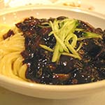

ビビンバ
￥780
出来立てご飯に彩り野菜と肉、卵が栄養バランスも良い混ぜご飯です。
石焼ビビンバ
￥880
ビビンバをアツアツの石器に入れました。おこげが堪能でき、食べごたえ万点です。
キムチチゲ
￥880
豚肉とキムチが絶妙にマッチした韓国鍋です。栄養豊富、美容にもいい逸品です。
キムチチャーハン
￥880
キムチと新鮮な野菜と肉で仕上げた、ふわふわ深みのある香りが食欲をそそります。
スンドゥブチゲ
￥800
繊細でコクのある絹豆腐を韓国式チゲ鍋にしました。ご飯との相性もグッドです。
 ユッケジャン
ユッケジャン
￥880
上牛肉と色々な野菜で煮込み唐辛子で仕上げた深みのあるスープです。
テンジャンチゲ
￥800
季節の野菜と豆腐が熟成させた韓国味噌で深い味に、やみつきになる味噌チゲです。
コムタン
￥800
厳選した牛テールを時間をかけてじっくり煮込んだ濃厚なスープです。
カルビタン
￥800
煮込んだ牛カルビと野菜の繊細さが食べ応えと満足感を感じさせてくれます。
ジャジャン麺
￥800
ジャジャン麺は、韓国では人気ナンバー1の麺料理で日本のラーメンと同じくらい身近です。
 豚バラ野菜炒め定食
豚バラ野菜炒め定食
￥900
ビリ辛唐辛子と豚肉と野菜のバランスが>とても良く美容食にも最適な逸品です。